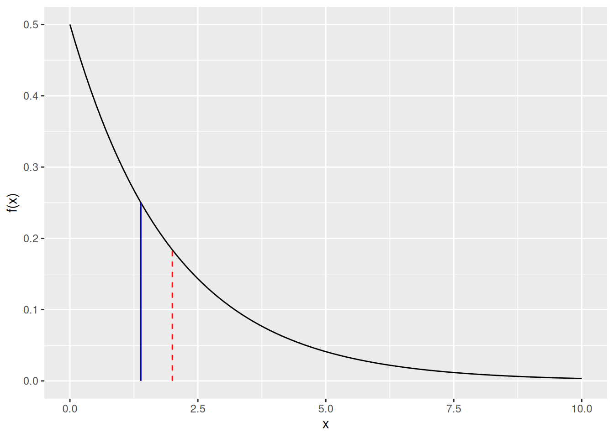
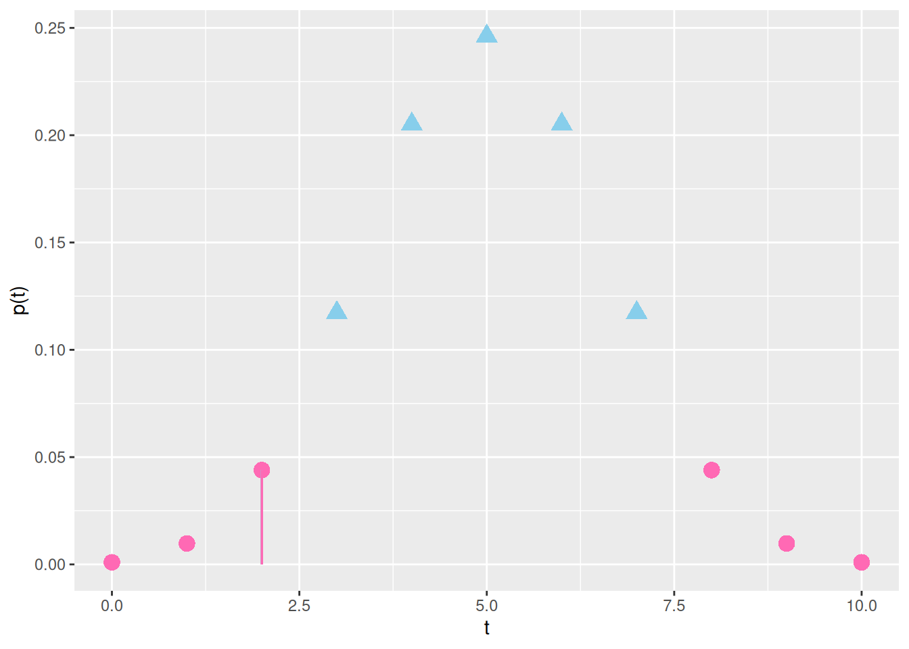
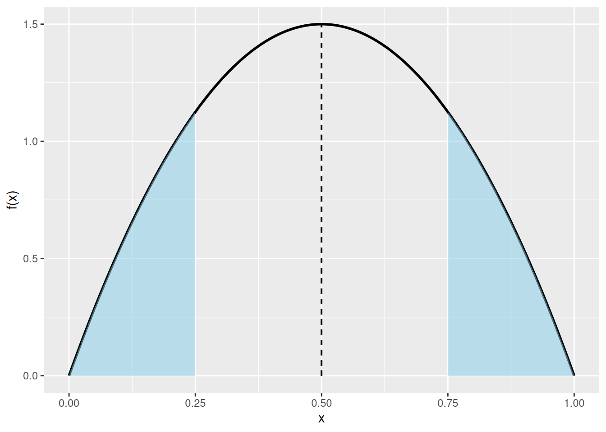

Luku 5 Epäparametrisia tilastollisia testejä
Sekä Tilastotieteen perusteissa että tällä kurssilla ollaan tähän asti keskitytty parametrisiin tilastollisiin testeihin. Parametrisissa tilastollisissa testeissä oletetaan, että satunnaisotos \(X_1, X_2, \ldots, X_n\) noudattaa jotain tunnettua jakaumaa \(F_{\boldsymbol\theta}(x) = \mathbb{P}(X\leq x)\), jossa parametrivektori \(\boldsymbol\theta\in\mathbb{R}^d\) määrittää jakauman \(F_{\boldsymbol\theta}\). Esimerkiksi jos oletetaan että satunnaisotos ollaan generoitu normaalijakaumasta \(N(\mu, \sigma^2)\), niin \(\boldsymbol\theta = (\mu, \sigma^2)^T\in\mathbb{R}^d\) ja voimme testata nollahypoteesia \(H_0: \mu = \mu_0\) vaihtoehtoista hypoteesia \(H_1: \mu \neq \mu_0\) vastaan t-testin avulla.
Aina emme kuitenkaan tiedä datan generoivaa jakaumaa. Eli emme voi olettaa datan tulevan normaalijakaumasta, tasajakaumasta, eksponenttijakaumasta tai mistä tahansa muusta jakaumasta. Yllättävää kyllä, myös tämäntyyppisiin tilanteisiin on olemassa tilastollisia testejä. Epäparametriset testit (eng: nonparametric) testit, joita käsitellään tässä luvussa, eivät oleta datan tulevan mistään tietystä jakaumasta.
Luvuissa 5.1 ja 5.2 käsittelemme kahta erillistä epäparametrista testiä liittyen jakauman sijaintiin. Luvussa 5.3 käsittelemme useamman eri otoksen vertailua erään epäparametrisen testin avulla. Lisätietoa luvun aiheista löydät esimerkiksi kirjan Introduction to probability and statistics for engineers and scientists luvusta 12 (Ross 2021).
5.1 Merkkitesti
Olkoon \(X\) satunnaismuuttuja, joka noudattaa jatkuvaa jakaumaa \(F = \mathbb{P}\left(X\leq x\right)\) ja olkoon \(m\) jakauman \(F\) mediaani. Toisin sanoen \(m\in\mathbb{R}\) on luku niin, että \(F(m) = 0.5\). Olemme kiinnostuneita testaamaan seuraavaa nollahypoteesia \(H_0\) vaihtoehtoista hypoteesia \(H_1\) vastaan \[\begin{align} \tag{5.1} &H_0: m = m_0, \\ &H_1: m \neq m_0. \end{align}\] Kuten t-testissä, olemme nyt myös kiinnostuneita jakauman sijainnista. Tässä tapauksessa jakauman sijainnin mittarina käytämme kuitenkin mediaania emmekä odotusarvoa kuten t-testissä. Symmetrisille jakaumille mediaani ja odotusarvo ovat yhtä suuria, mutta kuten kuva 5.1 näyttää, epäsymmetrisen jakauman mediaani ja odotusarvo voivat olla erisuuria. Täten mediaani ja odotusarvo kuvaavat jakauman sijaintia hieman eri tavoin.
Kuva 5.1: Musta viiva antaa erään eksponenttijakauman tiheysfunktion (rate \(\lambda = 0.5\)). Jakauman odotusarvoa (\(= 1/\lambda = 2\)) kuvaa punainen katkonainen pystyviiva ja mediaania (\(\ln(2) / \lambda \approx 1.39\)) sininen kiinteä pystyviiva.
Olkoon \(\overrightarrow{X} = \{X_1, \ldots, X_n\}\) otos riippumattomia havaintoja satunnaismuuttujasta \(X\). Kaavan (5.1) hypoteeseja voidaan testata seuraavalla idealla. Mediaanin määritelmän mukaan, nollahypoteesin alla noin puolet havainnoista ovat pienempiä kuin \(m_0\) ja puolet havainnoista ovat suurempia kuin \(m_0\). Tämän idean muotoilu matemaattisesti johtaa niin kutsuttuun merkkitestiin (eng: sign test). Määritellään osoitinmuuttuja \[\begin{equation*} \mathrm{I}_i = \begin{cases} 1 & \text{jos}\ X_i < m_0, \\ 0, & \text{jos}\ X_i \geq m_0, \end{cases} \end{equation*}\] joka kertoo onko havainto \(X_i\) suurempi vai pienempi kuin mediaani nollahypoteesin alla. Testisuureessa lasketaan, kuinka monta havaintoa jää arvon \(m_0\) alapuolelle. Eli testisuureen määritellään olevan \[\begin{equation*} \tag{5.2} T = \sum_{i = 1}^n \mathrm{I}_i. \end{equation*}\]
Alla näytetään esimerkki merkkitestin testisuureen laskemisesta.
Esimerkki 5.1 (Merkkitestin testisuure) Taulukon 5.1 ensimmäisessä sarakkeessa näkyy otos erään yrityksen työntekijöiden palkoista. Otoksen koko on \(n = 10\). Otoksen avulla haluamme testata, onko yrityksen työntekijöiden mediaanipalkka \(m_0 = 3200\) euroa. Taulukosta näemme, että kahden työntekijän palkka on pienempi kuin \(m_0\), joten testisuureeksi saadaan \(t = 2\). Merkkitestin nimi tuleekin siitä, että testisuuretta laskettaessa tarkastellaan erotuksien \(\texttt{salary}_i - m_0\) merkkejä (\(+\) tai \(-\)). Tässä tapauksessa testisuure on “\(-\)” merkkien määrä.
| Palkka | \(\texttt{salary}_i - m_0\) | Erotuksen merkki |
|---|---|---|
| 3000 | -200 | \(-\) |
| 5400 | 2200 | \(+\) |
| 3300 | 100 | \(+\) |
| 7300 | 4100 | \(+\) |
| 10000 | 6800 | \(+\) |
| 2600 | -600 | \(-\) |
| 3600 | 400 | \(+\) |
| 7600 | 4400 | \(+\) |
| 3700 | 500 | \(+\) |
| 3500 | 300 | \(+\) |
Huomioi, että palkkajakauman sijaintiin liittyvissä tilastollisissa testeissä t-testin käyttäminen on usein hyvin arvelluttavaa, koska
palkkajakaumat ovat usein epäsymmetrisiä (toisin kuin normaalijakauma) ja
jakauman oikea häntä on usein paksu (todella korkeita palkkoja esiintyy enemmän, mitä odottaisi normaalijakauman alla),
mutta t-testissä palkkojen jakaumaksi oletettaisiin nimenomaan normaalijakauma! Merkkitestissä ainoa palkkojen jakaumaan liittyvä oletus on jatkuvuus.
Jos nollahypoteesi pätee, niin testisuureen odotusarvo on \(\mathbb{E}(T) = n/2\), koska puolet havainnoista ovat pienempiä kuin \(m_0\) ja puolet ovat suurempia kuin \(m_0\). Toisaalta jos testisuure poikkeaa paljolti arvosta \(n/2\), niin meillä on näyttöä nollahypoteesia vastaan. Itseasiassa voimme sanoa testisuureesta paljon enemmän. Kaavan testisuureen (5.2) laskeminen muistuttaa tilannetta, jossa heitämme kolikkoa monta kertaa peräkkäin ja laskemme esimerkiksi klaavojen määrän \(n\) heiton jälkeen – tässä tapauksessa emme kuitenkaan laske klaavojen määrää vaan sitä, kuinka moni havainto on pienempää kuin \(m_0\). Eli testisuure noudattaa binomijakaumaa \(T\sim \mathrm{Bin}(n, p)\). Kun binomijakauman parametreiksi asetetaan \(n\) (vrt. “kolikon heittojen määrä”) ja \(p\) (vrt. “todennäköisyys saada klaava”), niin binomijakauman pistetodennäköisyysfunktio on
\[\begin{equation*}
p_T(t) = \mathbb{P}\left(T = t\right) = \binom{n}{t} p^t(1 - p)^{n-t},
\quad t\in\{0, 1, 2, \ldots, n\},
\end{equation*}\]
jossa \(\binom{n}{t}\) on binomikerroin. Kuten jo todettua, niin nollahypoteesin alla todennäköisyys saada negatiivinen erotus \(X_i - m_0\) on \(1/2\). Tämän vuoksi kaavan (5.1) hypoteesit ovat yhtäpitäviä seuraavien hypoteesien kanssa
\[\begin{align*}
&H_0: p = 1/2, \\
&H_1: p \neq 1/2,
\end{align*}\]
kun \(T\sim \mathrm{Bin}(n, p)\). Eli merkkitestissä testaamme vain sitä, onko negatiivisten erotuksien \(X_i - m_0\) suhteellinen osuus \(50\%\). Nyt p-arvo voidaan laskea käsin tai käyttäen R:n funktiota binom.test().
Esimerkki 5.2 (Merkkitestin p-arvo) Jatketaan esimerkkiä 5.1, jossa havaittu testisuure on \(t = 2\) ja otoskoko on \(n = 10\). Nollahypoteesin alla testisuure noudattaa jakaumaa \(\mathrm{Bin}(10, 1/2)\). Muista, että p-arvo antaa todennäköisyyden havaita poikkeavimpia tai yhtä poikkeavia testisuureen arvoja kuin \(t\) nollahypoteesin alla \(H_0\). Tässä tapauksessa poikkeavuutta mitataan etäisyytenä testisuureen odotusarvosta \(\mathbb{E}(T) = 5\). Havaitun testisuureen etäisyys odotusarvosta on \(5 - 2 = 3\) ja arvoilla \(\{0, 1, 2, 8, 9, 10\}\) etäisyys on sama tai vielä suurempi. Kuvassa 5.2 ollaan havainnollistettu poikkeavat arvot \(\{0, 1, 2, 8, 9, 10\}\) pinkeillä palloilla.

Kuva 5.2: Binomijakauman \(\mathrm{Bin}(10, 1/2)\) pistetodennäköisyysfunktio \(p_T(t)\) arvoilla \(t\in\{0, 1, \ldots, 10\}\). Pinkki viiva vastaa testisuureen arvoa (\(x\)-akselilla \(t = 2\)). Pinkit pallot vastaavat niitä arvoja, jotka ovat poikeavampia kuin havaittu testisuure. Siniset kolmiot ovat niitä arvoja joita ei oteta mukaan p-arvon laskemiseen.
Eli p-arvo voidaan laskea kaavalla \[\begin{equation*} \sum_{t\in A} p_T(t), \end{equation*}\] jossa \(A = \{0, 1, 2, 8, 9, 10\}\) ja \(p_T\) on jakauman \(\mathrm{Bin}(n, p)\) pistetodennäköisyysfunktio.
## [1] 0.109375Koska binomijakauma \(\mathrm{Bin}(10, 1/2)\) on symmetrinen odotusarvon \(5\) suhteen, niin p-arvo voidaan myös sieventää muotoon \[\begin{equation*} 2\mathbb{P}\left(T\leq 2\right), \end{equation*}\] joka voidaan näppärästi laskea binomijakauman kertymäfunktion avulla.
## [1] 0.109375Kuitenkin yleensä merkkitesti suoritetaan R:n funktiolla binom.test(), joka ottaa sisäänsä testisuureen \(t = 2\), otoskoon \(n = 10\) ja todennäköisyyden \(\mathbb{P}(X_i\leq m_0)\), joka on \(1/2\) nollahypoteesin alla.
##
## Exact binomial test
##
## data: t and n
## number of successes = 2, number of trials = 10, p-value = 0.1094
## alternative hypothesis: true probability of success is not equal to 0.5
## 95 percent confidence interval:
## 0.02521073 0.55609546
## sample estimates:
## probability of success
## 0.2Joka tapauksessa p-arvoksi saadaan \(\approx 0.11\). Tällöin esimerkiksi merkitsevyystasolla \(\alpha = 0.05\) meillä ei ole tarpeeksi näyttöä nollahypoteesin (mediaanipalkka on \(3200\) euroa) hylkäämiseen.
Huomautus 5.1 (Normaaliaproksimaatio) Suurella otoskoolla merkkitesti voidaan myös suorittaa normaaliaproksimaation (p-arvo lasketaan normaalijakaumasta) avulla samaan tapaan kuin “testi suhteelliselle osuudelle” kurssilla Tilastotieteen perusteet. Normaaliapproksimaatio oli käytännön kannalta hyödyllinen aikana, jolloin tehokkaita tietokoneita ei ollut, minkä vuoksi p-arvon laskeminen testisuureen tarkan jakauman eli binomijakauman avulla saattoi olla vaikeaa.
Aivan kuten t-testin tapauksessa, voimme suorittaa yksisuuntaisen merkkitestin esimerkiksi hypoteeseilla \[\begin{align} &H_0: m = m_0, \\ &H_1: m > m_0. \end{align}\] Merkkitestillä voidaan myös vertailla kahden ryhmän mediaaneja, jos havainnot ovat parittaisia. Oletetaan, että olemme havainneet kaksi otosta \(\overrightarrow{X} = \{X_1, \ldots, X_n\}\) ja \(\overrightarrow{Y} = \{Y_1, \ldots, Y_n\}\), joiden otoskoot ovat yhtäsuuret. Lisäksi oletetaan, että
Parin \((X_i, Y_i)^T\) sisällä saa olla riippuvuutta mutta
parit \(\{(X_1, Y_1)^T, (X_2, Y_2)^T, \ldots, (X_n, Y_n)^T\}\) ovat riippumattomia, ja
erotukset \(X_i - Y_i\) (tai \(X_i - Y_i\)) noudattavat jatkuvaa jakaumaa.
Tällöin kahden ryhmän mediaanien yhtäsuuruutta voidaan testata parittaisella merkkitestillä. Parittainen merkkitesti on vain yhden otoksen merkkitesti erotuksille \(X_i - Y_i\). Viikon 7 tehtävässä 1 suoritetaan parittainen yksisuuntainen merkkitesti askel askeleelta.
5.2 Merkkisijatesti
Olkoon \(X\) satunnaismuuttuja, joka noudattaa jatkuvaa jakaumaa \(F = \mathbb{P}\left(X\leq x\right)\). Jakauman \(F\) mediaanin lisäksi ollaan usein kiinnostuneita siitä, onko jakauma symmetrinen mediaanin suhteen. Olemme siis kiinnostuneita testaamaan seuraavaa nollahypoteesia \(H_0\) vaihtoehtoista hypoteesia \(H_1\) vastaan \[\begin{align*} &H_0: \text{Havainnot ovat symmetrisesti jakautuneet arvon $m_0$ ympärille}, \\ &H_1: \text{Havainnot eivät ole symmetrisesti jakautuneet arvon $m_0$ ympärille}. \end{align*}\] Formaalisti nollahypoteesit voidaan ilmaista seuraavasti \[\begin{align*} &H_0: \mathbb{P}\left(X \leq m_0 - a\right) = \mathbb{P}\left(X \geq m_0 + a\right) \quad \text{kaikille}\ a\in\mathbb{R}, \\ &H_1: \mathbb{P}\left(X \leq m_0 - a\right) \neq \mathbb{P}\left(X \geq m_0 + a\right) \quad \text{jollekin}\ a\in\mathbb{R}. \end{align*}\] Kuva 5.3 havainnollistaa nollahypoteesin tilannetta.
Kuva 5.3: Kiinteä musta käyrä kuvaa erään symmetrisen jakauman tiheysfunktiota. Kuvassa ollaan asetettu \(m_0 = 0.5\) ja \(a = 0.25\). Katkoviiva kuvaa jakauman mediaania \(m_0 = 0.5\). Siniset alueet kuvaavat todennäköisyyksiä \(\mathbb{P}\left(X \leq m_0 - a\right)\) ja \(\mathbb{P}\left(X \geq m_0 + a\right)\). Kyseisen jakauman tapauksessa millä tahansa muulla \(a\):n valinnalla siniset pinta-alat ovat yhtäsuuria.
Olkoon \(\overrightarrow{X} = \{X_1, \ldots, X_n\}\) otos riippumattomia havaintoja satunnaismuuttujasta \(X\). Kaavan (5.1) hypoteeseja voidaan testata seuraavalla idealla. Kuten merkkitestissä, haluamme tarkastella sitä, kuinka moni havainto on pienempää kuin \(m_0\) tai suurempaa kuin \(m_0\). Tämän lisäksi otamme huomioon havaintojen etäisyyden arvosta \(m_0\) tietyllä tavalla. Tämän idean matemaattinen formalisointi johtaa merkkisijatestiin (eng: signed rank test). Määritellään satunnaismuuttujat \(Y_i = X_i - m_0\), \(i\in\{1, \ldots, n\}\) ja olkoon \(R(|Y_i|)\) satunnaismuuttujan \(|Y_i|\) sija (eng: rank). Esimerkiksi jos \(Y_1 = 2\), \(Y_2 = -3\) ja \(Y_3 = 0.5\), niin \(|Y_1| = 2\), \(|Y_2| = 3\) ja \(|Y_3| = 0.5\), jolloin \(R(|Y_3|) = 1\), \(R(|Y_1|) = 2\) ja \(R(|Y_2|) = 3\). Eli pienimmän itseisarvon sija on \(1\), toiseksi pienimmän itseisarvon sija on \(2\), …, suurimman itseisarvon sija on \(n\). Määritellään osoitinmuuttuja samaan tapaan kuin merkkitestissä, \[\begin{equation*} \mathrm{I}_i = \begin{cases} 1 & \text{jos}\ Y_i < 0, \\ 0, & \text{jos}\ Y_i \geq 0. \end{cases} \end{equation*}\] Toisin sanoen osoitinmuuttuja kertoo, onko havainto \(X_i\) pienempää kuin \(m_0\). Nyt merkkisijatestin testisuure on painotettu summa osoitinmuuttujista \[\begin{equation} \tag{5.3} T = \sum_{i = 1}^n R(|Y_i|)\mathrm{I}_i. \end{equation}\] Kuten merkkitestissä, tavallaan laskemme niiden havaintojen \(X_i\) määrän, jotka ovat pienempää kuin \(m_0\). Ero on se, että testisuureessa painotamme enemmän niitä havaintoja, jotka ovat kauempana arvosta \(m_0\).
Alla on esimerkki merkkisijatestin testisuureen laskemisesta.
Esimerkki 5.3 (Merkkisijatestin testisuure) Käytetään esimerkin 5.1 palkkadataa. Taulukon 5.2 ensimmäisessä sarakkeessa näkyy otos erään yrityksen työntekijöiden palkoista. Otoksen koko on \(n = 10\). Otoksen avulla haluamme testata, onko yrityksen työntekijöiden palkka symmetrisesti jakautunut arvon \(m_0 = 3200\) euroa suhteen. Taulukon avulla voimme laskea merkkisijatestin havaitun testisuureen arvon. Taulukosta näemme, että kahden työntekijän palkka on pienempi kuin \(m_0\) (työntekijöitä vastaavat rivit ollaan väritetty pinkillä). Näitä työntekijöitä vastaavien erotusten itseisarvojen sijat ovat \[\begin{equation*} R(|\texttt{salary}_1 - m_0|) = 2 \quad\text{ja}\quad R(|\texttt{salary}_6 - m_0|) = 6. \end{equation*}\] Havaitun testisuureen arvo on siis \(t = 2 + 6 = 8\). Merkkisijatestin nimi tuleekin siitä, että testisuuretta laskettaessa tarkastellaan erotuksien \(\texttt{salary}_i - m_0\) merkkejä (\(+\) tai \(-\)) ja sijoja.
| Palkka | \(\texttt{salary}_i - m_0\) | Erotuksen merkki | Erotuksen sija |
|---|---|---|---|
| 3000 | -200 | \(-\) | 2 |
| 5400 | 2200 | \(+\) | 7 |
| 3300 | 100 | \(+\) | 1 |
| 7300 | 4100 | \(+\) | 8 |
| 10000 | 6800 | \(+\) | 10 |
| 2600 | -600 | \(-\) | 6 |
| 3600 | 400 | \(+\) | 4 |
| 7600 | 4400 | \(+\) | 9 |
| 3700 | 500 | \(+\) | 5 |
| 3500 | 300 | \(+\) | 3 |
Voidaan laskea, että testisuureen odotusarvo ja varianssi ovat
\[\begin{equation*}
\mathbb{E}(T) = \frac{n(n+1)}{4} \quad\text{ja}\quad
\mathrm{Var}(T) = \frac{n(n + 1)(2n + 1)}{24}.
\end{equation*}\]
Suurella otoskoolla \((T - \mathbb{E}(T))/(\sqrt{\mathrm{Var}(T)})\) noudattaa likimain standardinormaalijakaumaa \(N(0,1)\). Normaalijakauman avulla voidaan siis suorittaa likimääräinen merkkisijatesti. Kuitenkin R:n funktiolla wilcox.test() p-arvo voidaan laskea tarkasti, vaikka testisuureen tarkkaa jakaumaa ei voida ilmoittaa alkeisfunktioiden avulla.
Huomautus 5.2 Tässä luvussa käsiteltyyn merkkisijatestiin viitataan usein kirjallisuudessa nimellä Wilcoxonin merkkisijatesti kehittäjän sukunimen mukaan.
Esimerkki 5.4 (Merkkisijatestin p-arvo) Jatketaan esimerkkiä 5.3, jossa havaittu testisuure on \(t = 8\) ja otoskoko on \(n = 10\). Lasketaan ensin p-arvo normaaliapproksimaation avulla. Alla olevassa koodissa laskemme ensin suureen \(\tilde t = (t - \mathbb{E}(T))/(\sqrt{\mathrm{Var}(T)})\).
n <- 10
t <- 8
t_mean <- n * (n + 1)/ 4
t_var <- n * (n + 1) * (2 * n + 1)/ 24
t_tilde <- (t - t_mean) / sqrt(t_var)
t_tilde## [1] -1.987624Eli saamme \(\tilde t \approx -1.99\).
Olkoon \(\tilde T\) satunnaismuuttuja, joka noudattaa standardinormaalijakaumaa \(N(0,1)\) ja olkoon \(F\) jakauman kertymäfunktio. Standardinormaalijakauman symmetrisyyyden perusteella normaaliapproksimoitu p-arvo on \[\begin{equation*} \mathbb{P}\left(|\tilde T| \geq |\tilde t|\right) = \mathbb{P}\left(t \geq -\tilde t\right) + \mathbb{P}\left(t \leq \tilde t\right) = 2\mathbb{P}\left(t \leq \tilde t\right) = 2F(\tilde t), \end{equation*}\] Nyt voimme laskea normaaliapproksimoidun p-arvon R:n avulla.
## [1] 0.04685328Approksimoitu p-arvo voidaan laskea myös funktion wilcox.test() avulla. Jotta p-arvo lasketaan samoin kuin yllä, niin argumentit exact ja correct täytyy asettaa oikein. Alla olevassa koodissa vektori salary_data sisältää palkkadatan.
## [1] 3000 5400 3300 7300 10000 2600 3600 7600 3700 3500##
## Wilcoxon signed rank test
##
## data: salary_data
## V = 47, p-value = 0.04685
## alternative hypothesis: true location is not equal to 3200Huomioi, että funktio wilcox.test() raportoi erilaisen testisuureen kuin kaavassa (5.3) esitetty. Itseasiassa R raportoi testisuureen, joka lasketaan positiivisten erotuksien avulla. Eli R:n raportoima testisuure on \(7 + 1 + 8 + 10 + 4 + 9 + 5 + 3\) taulukon 5.2 mukaan. Sillä ei ole väliä määritelläänkö testisuure positiivisten vai negatiivisten erotuksien avulla.
Normaaliapproksimaatio on kätevä, jos työkaluina on vain paperi ja kynä. Kuitenkin nykyajan tietokoneilla tarkan p-arvon laskemisessa ei yleensä ole suurempia laskennallisia ongelmia.
##
## Wilcoxon signed rank exact test
##
## data: salary_data
## V = 47, p-value = 0.04883
## alternative hypothesis: true location is not equal to 3200Tarkka p-arvo eroaa hieman normaaliapproksimoidusta p-arvosta. Joka tapauksessa nollahypoteesi hylätään, kun käytetään merkitsevyystasoa \(\alpha = 0.05\). Meillä on siis näyttöä sitä vastaan, että palkkajakauma olisi symmetrinen arvon \(m_0 = 3200\) ympärillä.